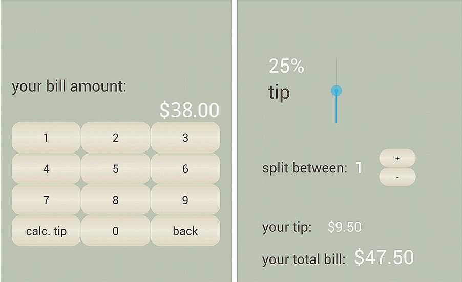
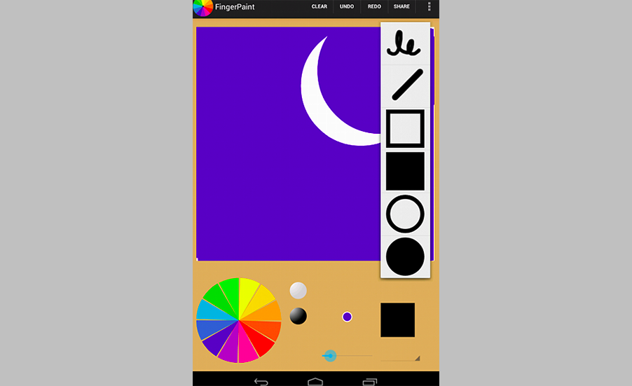
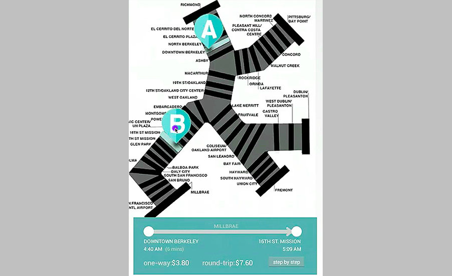

project //
android applications
occasion/context
university of california, berkeley CS 160 user interface design
classwork
During Spring 2013 Semester, I learned how to program mobile applications using the Android SDK. The assignments featured here are a tip calculator, a BART trip planner and a finger painting program. For all three applications, my design goals were to use direct manipulation and always maintain visibility of system status.

application for splitting the bill and calculating tips at a restaurant

finger drawing application, selecting current brush

BART planning application with draggable pins and instant fare calculation / train times